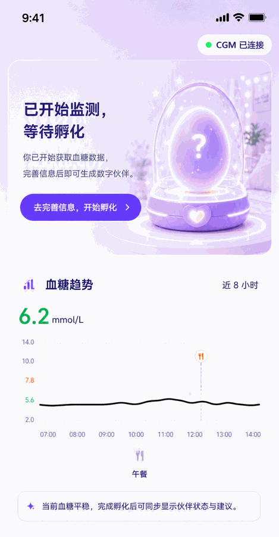
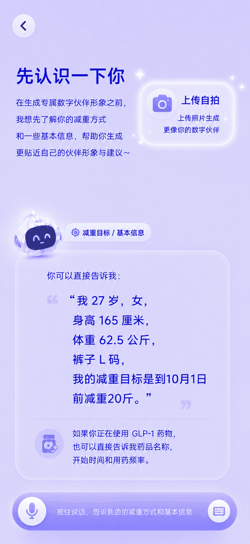
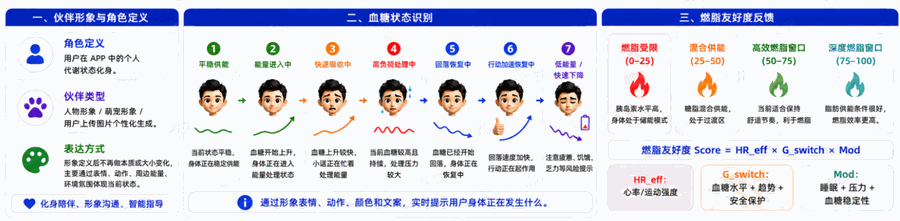
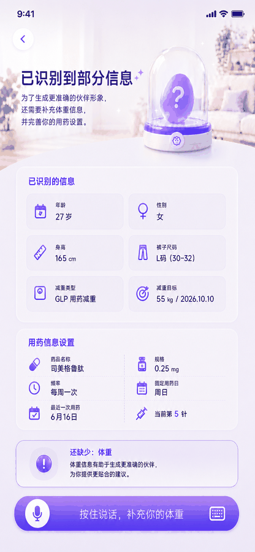
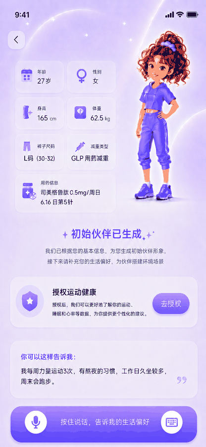

欢迎来到控糖减重APP
关注每一次感受，守护每一天的自己
已为您加密本机号码
138****5678 运营商认证保障账号安全其他登录方式
绑定 CGM 设备
开始持续监测，掌握全天血糖变化
绑定前准备
支持扫一扫设备或蓝牙连接
‹
佩戴视频
▶
CGM 正确佩戴指南
1 分钟了解佩戴位置、扫码绑定和连接注意事项
佩戴要点
选择上臂外侧清洁干燥区域。
贴合后轻压固定，避免马上剧烈运动。
返回绑定页扫码，等待设备连接成功。
开始绑定♥
将二维码放入扫描框，识别后自动连接设备
▣正在扫描设备码...
请将设备码对准扫描框
识别成功后将自动进入设备详情 切换蓝牙连接 ›已识别设备
I6Pro动态血糖仪
连接中已连接
设备型号
I6Pro CGM
设备编号
SN CGM2405120930
连接进度
68%100%
正在建立安全连接，请保持设备靠近手机连接成功，可以开始初始化监测
‹
蓝牙连接
正在搜索附近设备
请保持手机蓝牙开启，并让 I6Pro 动态血糖仪靠近手机。
发现设备
也可以返回扫码绑定设备二维码。

血糖趋。
8 小时6.2mmol/L鐘舵佸钩绋
当前血糖平稳，完成孵化后可同步显示伙伴状态与建议。
今日摄入与记。
GLP-1 用药管理
减重用药中棣栭〉
上午好，晨曦 ☀
CGM 已连接
数字伙伴孵化。
你的专属数字伙伴正在积蓄能量，
激活后即将与您见面 ✓
聊一聊，唤醒专属伙伴
和未来的 TA 轻松聊几句，让它更快认识你的目标、习惯与状态，准备更懂你的陪伴。
数字伙伴将如何帮助你
实时关注趋势变化，帮你看懂身体信。
结合你的生活习惯，提供个性化建议
持续陪伴与鼓励，守护你的健康目标
设备初始化中
设备正在建立稳定数据基线，初始化完成后将开始展示实时状态。
预计剩余时间02:00:00
实时血。
初始化中--mmol/L暂无数据
14.010.07.85.62.0
07:0009:0011:0013:00
暂无血糖数据，无法进行分析
今日摄入与记。
!
CGM 已连接
本次监测已结。
当前设备已结束监测，绑定新的 CGM 后可继续了解身体变化。
绑定新设。›实时血。
未监。--mmol/L暂无数据
14.010.07.85.62.0
07:0009:0011:0013:00
暂无血糖数据，无法进行分析
今日摄入与记。
1选择目标
2浜嗚В涔犳儻
3开始使用
你好，我会先了解你的目标与习惯，并帮你孵化一个专属数字伙伴，后续会结合血糖、运动和睡眠数据，陪你一起找到更适合自己的饮食与行动方式。
先选择你想生成的数字伙伴形象，我再继续问你当前最想改善的目标。
先选择你的数字伙伴
可生成萌宠、人物，或上传照片定。
选择你的主要目标
我们将围绕该目标，为你提供个性化的观察与建议
减重补充信息
是否GLP-1 用药
未记录用药信。
再补充一些基础信息和日常习惯，我会更好地理解你，并给出更适合你的建议。
先确认基础档案，完成后我再继续了解你的生活方式。
完善你的基础档案
请确认下面信息，便于个性化分析
你的生活方式
最后一步，连接常用健康数据后，我可以把血糖和运动、睡眠、压力一起分析，让建议更准确，也能更快发现真正适合你的方法。
连接运动健康
授权后可读取相关数据，帮助生成更完整的分。
已为你准备第一阶段计划
了解身体基线
稳定餐后血。
科学减重启动

自拍上传成功，将用于生成更像你的数字伙伴



上午好，晨曦 ☀
体重68.4 kg
BMI26.1
体脂31%
快速吸收中｜燃脂受限
血糖正在快速上升，身体优先处理餐后能量，当前不利于脂肪代谢。
CGM 连接良好平稳供能｜高效燃脂
血糖保持平稳，身体正在稳定供能，当前更适合脂肪供能。
CGM 连接良好快速吸收中｜燃脂受限
午餐碳水摄入偏高，餐后活动不足，血糖仍在上升，身体优先处理葡萄糖能量。
建议饭后轻走 10 分钟 帮助稳定血糖 ›血糖趋势实时血糖实时血糖
8.9mmol/L
较 15 分钟前 +0.85.8mmol/L
较 15 分钟前 +0.18.9mmol/L
🍴进食
餐后
🌙睡眠
08:10🍴进食
12:40🏃运动
分析建议
午餐碳水摄入相对较高，餐后血糖快速上升且波动明显。
压力较大和睡眠恢复可能影响血糖波动，建议餐后轻走，帮助稳定血糖。
分析建议
午餐结构均衡，血糖保持平稳，身体处于稳定供能状。銆
继续保持轻活动与均衡饮食，脂肪供能效率更楂銆
分析建议
血糖仍偏高且近 30 分钟波动明显，当前燃脂条件受限。
建议饭后轻走 10 分钟，帮助稳定血糖并减少饥饿反弹。
今日摄入与记。
GLP-1 用药管理
减重用药中
第4针司美格鲁肽 0.5 mg
还有 7 天下次注射
行为指标
宸插悆 920 kcal
碳水 98 g
均衡3,120
2 138 kcal
杈炬爣时长 7h 48m
睡眠得分 92 鍒
优良当前压力
今日压力 28%
低压今日验证计划
进行。
早餐蛋白搭配探索
2/3 娆
验证早餐高蛋白搭配对全天血糖稳定性的影响
观察指标：餐后峰值｜稳定时长｜能量水平。
完成后将记录为一次探索样。洞察
回顾你的代谢表现，减重进展与用药变化
本周代谢总结
体重持续稳步下降，GLP-1 使用后食欲控制明显改善，但晚餐波动与你食物结构仍在影响减脂效率。
上周对比：体重继续下降，波动时长减少本周糖代谢总结
7 天空腹血糖有 4 天高于目标，晚餐2 小时仍有高位持续，风险主要来自晚餐碳水比例、睡眠恢复和餐后活动不足。
本周重点：先降低空腹与餐后高位持续，再观TIR 和波动率改善重点问题与行动建议
重点问题与行动建议
血糖数据回顾
平均血糖每日波动
血糖数据回顾
空腹血糖餐后峰值
风险解释：空腹偏高与餐后高位持续同时出现，建议优先验证晚餐前置、餐后轻走与睡眠恢复。
体重趋势 & 用药周期
更多 ›行为回顾分析
本周期资产沉淀
查看全部 ›识别的代谢规律晚餐碳水敏感夜间波动放大睡眠恢复影响
食物红黑榜
红榜
🥛无糖酸奶
🥣豆浆
🍗鸡胸肉
黑榜
🧋奶茶
🍰高糖糕点
🍟油炸外卖
超级运动饭后快走 15-20 分钟抗炎控波动助睡眠
›
餐后回落。
识别餐后高位持续，定位影响减重效率的关键行为
问题概览
餐后回落。
餐后血糖已经恢复较慢，你需要更精准识别用餐时机、碳水结构和餐后活动。
关键数据表现
天餐后血糖回落趋。回落越短越好
形成原因洞察
晚餐碳水和脂肪比例偏。
晚餐结构更容易延长消化吸收时间，导致餐后血糖高位持续。
餐后活动启动较晚
7 天晚餐后 30 分钟内活动不足，肌肉对葡萄糖的利用没有及时介入。
夜间恢复承接不足
回落慢叠加入睡偏晚，会让夜间血糖恢复窗口变短，影响第二天代谢效率。
行动建议
1晚餐后轻走探索
查看探索 ›
2饭后 10-15 分钟开始轻走，连续验证 3 次，观察回落速度变化。
饮食搭配探索
查看探索 ›
减少晚餐精制碳水，优先蛋白和蔬菜，观察峰值和高位持续时长。
›
晨起空腹偏高
关注夜间波动与次日空腹，帮助判断减重阻力来源
问题概览
晨起空腹偏高
晨起空腹值偏高，提示夜间代谢消化不足、早餐前压力或睡眠恢复可能影响清晨状态。
关键数据表现
天晨起空腹趋。目标 5.6 mmol/L
形成原因洞察
晚餐时间偏晚，夜间消化窗口不。
晚餐后血糖回落未完成就进入睡眠，容易造成夜间残留和晨起偏高。
睡眠恢复与压力共同影响清晨状。
入睡偏晚或压力偏高时，清晨血糖更容易维持在高位。
睡前加餐和主食量可能放大空腹波动
夜间额外能量输入会推迟回落时间，影响次日空腹基线。
行动建议
1空腹改善专项探索
查看探索 ›
2提前晚餐、睡前不加餐，连续观察夜间波动和次日空腹变化。
晚餐搭配调整
查看方案 ›
晚餐主食减量并增加蛋白蔬菜，减少夜间血糖残留。
›
睡眠详情
回顾睡眠时长、作息与恢复情况
睡眠概览
天平均入睡时23:18，较理想时间偏晚，夜间有轻度中断，周末作息波动更明显。
💡建议：尽量提0分钟上床，固定起床时间，并减少睡前电子设备使用›今日睡眠概览
76睡眠得分鏁翠綋杈冨畬鏁
昨晚睡眠时长接近目标，深睡集中在前半夜，凌晨有短暂浅睡波动。
姣忔棩睡眠堕暱涓庣洰鏍
实际睡眠 目标05/3005/3106/0106/0206/0306/0406/05
目标睡眠7.5 h/
睡眠得分趋势
睡眠娣卞害鍥
22:4801:3004:1006:42
娣辩潯 2h10m娴呯潯 3h48mREM 1h04m娓呴啋 8m
每日睡眠明细
06/05 睡眠 22:48-06:42
查看夜间分析 ›总时7.3 h 得分 76 鍒
点评：入睡略晚，但整体睡眠较完整06/04 睡眠 23:35-06:20
查看夜间分析 ›总时6.5 h 得分 70 鍒
点评：睡眠时长略少，夜间有轻度中。06/03 睡眠 22:30-06:50
查看夜间分析 ›总时7.6 h 得分 79 鍒
点评：作息较稳定，恢复情况较。今日睡眠记录
昨晚 22:48-06:42
夜间分析 ›总时长 7.3 h · 得分 76 分 · 达成 91%
点评：深睡占比较好，建议今晚继续保持 23:00 前入睡。›
饮食详情
回顾饮食记录与营养目。
今日饮食概览
早餐、午餐记录完。
剩余可吃580kcal
杞昏蛋涓庢棩甯告椿鍔
今日早餐和午餐记录较完整，整体热量仍有余量；晚餐建议优先补充蔬菜和优质蛋白，主食控制在半拳到一拳。
饮食营养成分分析
饮食概览
天整体摄入热量充足，但能量碳水过高，早餐蛋白不足，间水外食导致热量波动较高。
💡建议：早餐增加优质蛋白（如鸡蛋、牛奶、豆制品）和蔬菜搭配›每日饮食摄入与目。
实际摄入 目标05/3005/3106/0106/0206/0306/0406/05
日均摄入351 kcal/
饮食营养成分分析
碳水化合物46%平均 156g/天
蛋白质24%平均 82g/天
脂肪 30%平均 45g/天
今日饮食记录明细每日饮食数据明细
08:10 早餐 420 kcal
查看分析详情 ›碳水 52g · 蛋白 18g · 脂肪 12g
主食偏多，优质蛋白不足。12:25 午餐 560 kcal
查看分析详情 ›碳水 65g · 蛋白 28g · 脂肪 16g
搭配均衡，蔬菜摄入较好。18:40 晚餐 580 kcal
查看分析详情 ›碳水 78g · 蛋白 24g · 脂肪 18g
晚餐碳水偏高，建议减少主食。‹
运动详情
近 2 周运动数据回顾与趋势分析
👟运动概览
整体活动消耗较为稳定，步数表现良好，但代谢运动和力量训练不足，周末活动明显下降。
💡建议：每周增加 2 次力量训练，并在周末增加 30 分钟中等强度运动›👟今日运动概览
今日活动主要集中在早晨和晚餐后，晚餐后轻走帮助餐后血糖回落。
每日活动消耗与目标
实际消耗 目标05/3005/3106/0106/0206/0306/0406/05
目标消耗：360 kcal/天
👣运动步数趋势
今日步数分布
晚餐19:00 活动峰值：3120
🏃每日运动明细
07:20 健身慢走
查看运动分析 ›32 分钟 · 3860 步 · 138 kcal
轻松活动，帮助开启全天代谢。12:40 午间快走
查看运动分析 ›12 分钟 · 2020 步 · 68 kcal
提升代谢活动量，建议继续保持18:30 爬楼
查看运动分析 ›42 分钟 · 4680 步 · 312 kcal
有氧耐力达成，心肺刺激充足‹
饮食分析详情
单次饮食后的血糖响应复盘
餐后血糖分析
稳定
午餐 · 杂粮饭 + 鸡胸肉 + 青菜
用餐开始前 1 小时到餐后 3 小时，血糖整体上升温和，餐后 2 小时已接近餐前水平。
血糖波动情况
餐前 1h - 餐后 3h用餐明细
12:25 开始杂粮饭 150g
约 210 kcal鸡胸肉 90g、鸡蛋 1 个
蛋白 34g西兰花、青菜约 250g
膳食纤维较好AI 分析结论
本餐建议这餐的碳水、蛋白和蔬菜比例较均衡，峰值控制在可接受范围内。建议继续保留“主食适量 + 优先蛋白 + 足量蔬菜”的结构；如果想进一步降低峰值，可把主食减少约 1/4，或在餐后 20-40 分钟轻走 10 分钟。
‹
运动分析详情
单次运动后的血糖与心率复盘
运动后血糖分析
有效
晚餐后轻走 12 分钟
运动开始后血糖上升被抑制，餐后峰值更低，回落速度较未运动餐次更快。
血糖波动情况
运动前 1h - 运动后 3h运动明细
数据来自华为健康心率训练区间
84分钟热身活动
22分钟燃烧脂肪
10分钟有氧运动
0分钟无氧运动
0分钟身体极限
AI 分析结论
本次运动建议本次运动强度主要集中在热身活动和燃脂区间，对餐后血糖回落友好，未出现过高强度导致的额外波动。建议继续把餐后轻走或低中强度活动安排在餐后 20-40 分钟，并保持 10-20 分钟即可。
‹
睡眠分析详情
夜间睡眠中的血糖与睡眠阶段复盘
夜间血糖曲线
22:00 - 06:00睡眠数据
数据来自华为健康
6月12日 22:00（入睡）~06:00（起床）
总睡眠7小时33分钟
深度睡眠 05:00-06:00
22:1006:30
›
压力详情
回顾压力波动，恢复与高压时段情况
压力概览
本周以中等压力为主，高压时段主要集中在下午，需注意工作节奏与休息安排。
💡建议：午后安排 5-10 分钟呼吸放松，并在睡前减少高刺激信息输入›今日压力概览
76当前压力偏高
今日高压主要集中 14:10-16:20，晚间恢复速度偏慢。
每日压力水平与目标
实际压力 目标05/3005/3106/0106/0206/0306/0406/05
目标压力：≤ 60 分
高压比例趋势
今日压力分布
高压中压低压
高压峰值 8214:10-16:20恢复 38 分钟
建议 16:30 前后加入 5 分钟呼吸放松。
每日压力明细
平均压力 76 鍒
低压 22%中压 45%高压 33%高压 14:10-16:20 点评：午后会议集中，恢复偏慢平均压力 70 鍒
低压 27%中压 48%高压 25%高压 10:30-12:00 点评：上午工作节奏快，放松时段不。平均压力 79 鍒
低压 18%中压 46%高压 36%高压 13:40-17:10 点评：下午连续会议导致设计升。今日压力明细
高压时段开。
压力 82持续 2h10m点评：连续会议叠加咖啡摄入，恢复偏慢。压力回落
压力 48恢复 38m点评：晚间散步后压力逐步回落。通过探索识别你的个性化规律
尽量在睡前4 小时完成晚餐
饭后轻走 10-15 分钟更适合
鸡蛋/牛奶让上午更稳定
进行中的探索
进行中晚餐前置探索第2/3 次
验证晚餐时间是否影响次日空腹与夜间稳定。
已完成2 次剩余 1 次
次日空腹 夜间波动 睡前血糖
餐后轻走探索第2/3 次
验证饭后轻走 10-15 分钟是否加快餐后回落。
已完成2 次剩余 1 次
回落时间 高位持续 餐后峰。
重点探索推荐
为你量身匹配的探索建议。
4 天夜间波动偏高。
晚餐前置探索
提前晚餐时间，减少夜间血糖波动，可能有助于降低次日空腹。
周期 3 天 难度 ★★☆☆。晚餐2 小时仍高于基线
晚餐后轻走探索
饭后轻走 10-15 分钟，验证对回落速度的影响。
周期 3 天 难度 ★★☆☆。发现更多探索
从你最想改善的状态开始。
空腹改善专项探索
优化晚餐与睡眠策略，改善空腹血糖。
周期 14 天 · 难度中稳糖减重专项探索
围绕饮食与生活方式，稳定血糖并健康减重
周期 14 天 · 难度中饮食搭配探索
验证哪种搭配更稳血糖、更有饱腹感
周期 3 次 · 难度低餐后轻走探索
验证饭后轻走是否能更快降低血糖波动。
周期 3 次 · 难度低食物单品探索
识别单个食物对峰值和饱腹感的影响
周期 4 次 · 难度低晚餐前置探索
验证提前晚餐对夜间稳定与空腹的影响。
周期 3 次 · 难度低睡前禁食探索
通过固定「睡前 3 小时禁食窗口」，对比有无夜间加餐的整夜血糖走势。
周期 3 天 · 难度低睡眠稳定探索
观察稳定作息对晨起空腹与恢复的影响。
周期 7 天 · 难度低7 天基础代谢探索
建立个人基础代谢和波动画像。
周期 7 天 · 难度低肌肉保护专项探索
验证蛋白与力量训练对减脂保肌的效果。
周期 14 天 · 难度中
新用户推荐
7 天基础代谢基线探索
- 先记录你的基础状态，再推荐更适合你的个性化探索
- 炵画 7 天观察血糖、空腹、餐后波动和夜间稳定
你将获得
了解你的基础状态与趋势
发现血糖波动高风险时段
基于你的数据推荐合适探。
获得更适合你的饮食与作息建。
发现更多探索
从你感兴趣的领域开始探。
空腹改善专项探索
改善空腹血糖，打造稳定清晨状。
ㄦ湡 14 天 难度 涓稳糖减重专项探索
围绕饮食与生活方式，稳定减重节奏
ㄦ湡 14 天 难度 涓饮食搭配探索
测试不同饮食搭配的血糖反。
ㄦ湡 3 次 难度餐后轻走探索
饭后轻走 10-15 分钟，观察回落速度
ㄦ湡 3 次 难度7天基础代谢探索
了解你的身体基础代谢状。
7天基础代谢探索。
绗4/7
7天基础代谢探索结果 已完成
探索周期：
通过连续 7 天的饮食、睡眠与 CGM 数据追踪，全面了解你的基础代谢水平，发现影响代谢效率的关键因素。
适合人群
✓想了解自己的基础代谢水平
✓经常感到疲劳，体重变化缓慢
✓甯屾湜鎵惧埌鎻愬崌浠ｈ阿鐨勬柟娉
整体进度
樻湁 3 天完成探。当前观察线索
滈棿娉㈠姩鐣ラ珮浜庡钩鍧囨按骞
›
✓建议早睡晚餐，有助于改善夜间稳定。
基础代谢可能偏低
›
本周平均基础代谢较同龄人低约 8%
睡眠时长充足
›
深睡占比 21%，继续保持良好作。
关键问题识别
夜间血糖波动高于平均水。
空腹血糖偏0.6 mmol/L
夜间血糖恢复速度理想
关键指标
7天趋势对。
结论总结
你的基础代谢处于偏低水平，晚餐与夜间波动较大。睡眠恢复表现较好，建议优化晚餐时间与结构，提升夜间血糖效率。
晚餐前置探索
验证晚餐时间对夜间恢复的影响
ㄦ湡 3 天 难度 ★★☆☆。空腹改善专项探索
通过晚餐策略与餐食时间优化，降低夜间波动，改善空腹血糖。
空腹改善专项探索进行。
绗9/14
空腹改善专项探索结果 已验证
探索周期：4 天
适合人群
✓空腹血糖偏高或有波。
✓夜间恢复慢，晨起疲惫
✓希望降低血糖波动风。
✓
不适用人群
提示
整体进度
樻湁 5 天完成探。执行策略
✓晚餐前置已完成
✓睡前禁食 2 小时已完成
✓睡眠稳定 小时已完成
当前数据概览
今天的执行情况
最近记录
3 天记录阶段有效
你的关键指标已有明显改善。
关键指标改善
趋势对比
结论总结
探索对你有效，建议继续沉淀为个人行动资产。
已沉淀到你的资产
生成个性化方法与指南。
已保存推荐描述
固定每日入睡时刻、保证每晚充足睡眠，对比作息紊乱与规律作息下整夜血糖走势，验证稳定睡眠对夜间血糖波动、晨起空腹、全天餐后血糖稳定性的改善作用。
适合人群
✓晨起空腹血糖偏高、空腹数值波动幅度大（空腹恢复不稳标签人群）
✓长期熬夜、入睡时间混乱、睡眠时长不足，晨起疲惫乏力
✓夜间血糖波动频繁、凌晨易出现血糖反弹
✓压力型作息紊乱、糖胖减重、需要优化全天血糖稳定性用户
不适用人群
长期轮班夜班无法固定入睡时间、严重失眠障碍自主难以调整、未成年人无监护人监督作息测试。
7
探索周期
固定周期 7 天，需累计达标有效打卡达 5 天。
做
怎么做
提前设定个人固定目标时间，作为 7 天统一作息标准；每日尽量在相同时间范围上床，确保实际睡眠时长≥目标小时。
看
核心观察指标
次日空腹、夜间波动、睡前血糖。
!
提示
重度失眠人群不要强行逼迫入睡，易产生焦虑反效果，可循序渐进微调作息。轮班倒夜班人群作息无法固定，基线对比失真，不适合开展本对照实验。
当前实验进度
进度 2/3 天今天的执行情况
当前策略的临时观察数据
对比未实验前三天均值最近记录
3 次记录第 1 次 · 早餐后
已记录入睡 23:05 · 睡眠 7.1h · 次日空腹 6.1 mmol/L
第 2 次 · 午餐后
已记录入睡 22:52 · 睡眠 7.4h · 夜间波动较前一晚降低
第 3 次 · 晚餐后
待记录默认带出晚餐是否记录、是否禁食，保存后生成本次观察
明显改善
稳定入睡后夜间高位持续时间缩短，次日空腹更平稳。
关键指标
对比未实验前三天平均数据0~8 点曲线趋势对比
虚线为实验前均值结论总结
连续执行固定入睡时间后，你的夜间血糖波动明显收窄，次日空腹较未实验前三天平均值下降。建议将 23:00 前入睡和睡前不加餐作为长期稳定策略；如遇压力或失眠，优先渐进式提前入睡，避免强迫入睡造成焦虑。
适合人群
✓餐后血糖容易快速冲。
✓快碳敏感、早/ 晚餐波动大、饮品耐受差人。
✓减重、糖胖、腹型脂肪偏高，想精细化控糖减脂
✓想区分哪些食物吃了易饿、哪些稳糖抗。
不适用人群
复杂混合大餐无法测试；肠胃急性不适、胰腺炎、孕期禁GLP 叠加极端节食测试。
选择探索的食物单。
探索周期
同一种食物完成 2 次有效样本
怎么做
选定一款待测单一食物，确定统一份量、食用时段（空腹 / 早午晚餐加餐），尽量仅吃这一种食物，并完整记录本次饮食。
佩戴 CGM 全程捕捉餐后完整血糖曲线，同条件重复测试第 2 次，提高结果可信度。
核心观察指标
餐后波动上升速度回落情况高位持续
!
提示
本探索仅做食材耐受观测，不可极端节食、只吃单一食物长期代餐。若测试中出现心慌、乏力、低血糖数值偏低，立刻补充复合碳水停止测试。
已验证 5 种食物
点击切换查看当前食物验证情况
验证中白粥黑榜
固定份量 250g · 早餐空腹
第 2 次验证，继续补充有效样本当前进度1 / 2 次
临时观察数据
样本完成后更新结论验证记录明细
1 条记录餐后峰值 9.6 mmol/L波动 +3.2 mmol/L回落 2.7h
本次验证食物
黑榜主食
白粥
2 次有效样本 · 早餐空腹
探索数据
平均餐后血糖曲线
2 次有效样本均值峰值 9.6 mmol/L峰值时间 52 分钟恢复 2.7 小时
总结结论
白粥对你的血糖影响较大，餐后上升快、峰值偏高，回落需要约 2.7 小时。建议减少单次份量，搭配鸡蛋与蔬菜，或替换为杂粮饭、全麦面包等更稳定的主食。
已沉淀至个人食物黑榜更多详情 ›适合人群
✓餐后血糖容易快速冲高、餐后长期高位不下（快速吸收中 / 高负荷血糖状态）
✓主食敏感、饮食结构精碳占比高、糖/ 腰腹脂肪偏高人群
✓减重控糖，想不用极端节食也能平稳血。
✓尝试过单一控碳效果差，需要优化进餐策。
不适用人群
急性胰腺炎、严重肠胃溃疡、孕期无医生指导、未成年自主测试。
选择验证策略
鍗曢探索周期
单一套搭配策略完成 2 次有效样本
怎么。
先选定 1 套想要验证的搭配策略（如：先吃蔬菜蛋白，最后吃主食）。
保证这一餐总食物种类、总热量和你平时正餐接近，仅改变进餐顺/ 主食份量，并完整填写饮食记录：食材份量、进食时间、进餐先后顺序。
核心观察指标
餐后波动上升速度回落情况高位持续
!
提示
所有搭配仅做结构优化，不可长期极低热量节食减重。
GLP 用药人群若测试时恶心腹胀，可适度降低主食总量，放缓测试节奏。
出现低血糖心慌乏力，立刻补充温和碳水，暂停本次探索记录。
已验证 5 种策略
点击切换查看当前策略验证情况
进行。
🍱
先菜蛋白后主。
1 / 2 娆
瑗垮叞鑺+ + 半份米饭
绗1 次有效样本，继续补充对照临时观察数据
与日常进餐平均值对。验证结论
有效该策略相对最近同类别餐时餐后数据，峰值和高位持续均有改善，适合沉淀为你的日常饮食方法。
最近记。
1 条记。绗1 娆路 06/15 晚餐
已记。瑗垮叞鑺+ + 半份米饭
蛋白前置对你有效
该策略能降低餐后上升速度与波动幅度，并延长饱腹时间。
已验证的黄金搭配
3 次有效样本🥚🥛🍞楦泲 + + 全麦面包推荐
先吃鸡蛋并饮用牛奶，10 分钟后再吃全麦面包。
关键指标对比
总结结论
蛋白前置能显著降低餐后血糖上升速度和波动幅度，同时缩短高位持续时间。早餐优先采用“鸡+ + 全麦面包”的顺序，更有利于血糖稳定和延长饱腹感。
宸叉矇娣鑷黄金搭配与早餐指。宸蹭繚瀛
适合人群
✓餐后血糖波动偏高、峰值难回落（高负荷处理中血糖状态）
✓晚餐后血糖高位持续时间久、夜间空腹易受晚餐拖。
✓日常久坐、基础活动量偏低、办公室伏案人群
✓糖胖减重、腰腹脂肪偏高、GLP 用药减脂人群
不适用人群
严重膝关节/ 腰关节损伤、心肺疾病、餐后易低血糖、急性肠胃不适、未成年无监护陪同自主测试。
探索周期
至少完成2 次有效记录，建议覆盖早餐、午餐或晚餐后的不同场景。
怎么做
正常完成一餐饮食，完整记录食材、进食时间、总主食份量。
在餐后 20-40 分钟区间内，开始 10/15/20 分钟匀速慢走，全程不中断。
核心观察指标
餐后波动上升速度回落情况高位持续
!
提示
膝关节损伤、腰突人群可缩短行走时长，改为原地站立踱步，避免关节负重。
若行走途中出现心慌、手抖、乏力低血糖表现，立刻停止并补充少量碳水。
当前探索进度
进行。2/3 娆
已记录早餐后、晚餐后轻走数据，还1 娆″畬鎴愰獙璇併
临时观察数据
与历史同类未轻走对比最近记。
2 条记。餐后轻走对你有效
餐后 200 鍐呰交璧105 分钟，能加速葡萄糖消耗，帮助压低餐后峰值并缩短高位持续。
关键指标对比
对比最近同类别餐时未轻走数/ 14 天平均餐后数。
血糖趋势对比
与历史同类未轻走的对比 未轻。 餐后轻走
鎬荤粨涓庤交璧扮瓥鐣
你的餐后血糖对轻度活动反应明显。建议在主食较多或晚餐后久坐时，于餐200 分钟开始，以可正常交谈的舒适速度轻走 105 分钟；若膝腰不适，可改为原地站立踱步。
宸叉矇娣鑷超级运动 路 餐后轻走宸蹭繚瀛
适合人群
✓晨起空腹血糖偏高、空腹波动幅度大（空腹恢复不稳标签人群）
✓夜间血糖回落缓慢、整夜波动频繁，晨起疲惫乏力
✓睡前血糖长期偏高，夜间易出现高糖负。
✓腹型肥胖、糖胖减重、需要优化空腹指标、执行空腹改善专项用。
不适用人群
低血糖频发、作息昼夜颠倒夜班人群、肠胃易饥饿反酸、未成年无监护自主测试。
探索周期
实验固定周期 3 天，需连续 3 天完整执行，中1 天未达标则周期重置。
怎么做
固定当日晚餐，食材、主食份量、总热量和你平日晚餐保持不变，将晚餐结束时间整体提前 45 分钟，保证吃完距离睡觉至少 3 小时。
晚餐结束后至睡前不再摄入任何食物，仅可少量饮用白水；最好完整记录晚餐进食起止时间、入睡时间、当日全部饮食。
核心观察指标
次日空腹夜间波动睡前血糖
!
提示
若提前晚餐后夜间强烈饥饿、心慌低血糖，可少量补充无糖蛋白加餐，缩短提前时长。
肠胃虚弱、容易反酸人群不建议过度提前晚餐，避免空腹不适感。
当前探索进度
进行。2/3
已连续 2 天完成晚餐前置，还差 1 天完成验证。
临时观察数据
对比未实验前三天平均数据最近记。
2 条记。晚餐前置明显改善
连续 3 次提前 45-60 分钟完成晚餐后，夜间波动降低，睡前血糖更平稳，次日晨起空腹有下降。
关键指标对比
对比验证前夜间数据
血糖趋势对比
对比验证前夜间数据 常规晚餐 晚餐前置
晚餐前置策略总结
晚餐前置对你的空腹恢复有明显帮助。建议优先在主食较多、睡前血糖偏高或近期空腹波动时执行：将晚餐结束时间提前 45 分钟，保证距离入睡至少 3 小时，晚餐后至睡前不再加餐。
宸叉矇娣鑷行动指南 路 晚餐前置宸蹭繚瀛
晨曦 查看档案 ›
科学减重路 本周期第 5
CGM 已连接
智能版 剩余 18
我的目标
目标体重 55.0 kg
已减 17 斤完成 60%
当前体重
63.5kg
开始2025.05.01目标 2025.08.01
更多功能
设备管理
查看设备状态、耗材与连接设。
数据与报告
👥查看历史报告、导出数据。
家庭管理
管理家人账号，查看家庭数。
帮助与客服
常见问题、使用帮助、联系我。
›
设备管理
管理你的健康设备与连接状。
CGM动态血糖仪
雅培 Libre 3 · SN A8F2-019
体脂秤
已连接
小米体脂秤 2
智能手表
已连接
Apple Watch
血压计
未连接
欧姆龙 BP710
历史设备
查看曾绑定过CGM 设备与历史记。
设备说明
CGM 可绑定多个历史设备，但同一时间仅支1 个进行中的监测设备，点击设备卡片可查看详情、连接状态和管理设置。
›
设备详情
动态血糖仪
已连接CGM 鎸佺画钁悇绯栫洃娴嬬郴缁
设备编号SN CGM2405120930
查看历史趋势
✓售后申请设备问题快速反。
操作指南了解设备使用方法
结束前请确认已同步最新数据，避免数据丢失。
结束后将停止数据监测，请谨慎操作
家庭成员3人
正在监测3人
›
亲友洞察
独立查看家人的周期健康趋势
当前成员妈妈
空腹偏高型 · 稳糖管理
血糖数据回顾
近 7 天重点问题
2 项晨起空腹偏高
夜间和清晨血糖水平偏高，建议关注晚餐时间和睡眠恢复。
建议：提前晚餐 + 睡前不加餐
连续观察 3 天，记录夜间曲线和次日空腹变化。
行为回顾
本周›
设置
›
帮助与客服
操作指南
如何正确佩戴并开始监测？
从开启蓝牙、扫码绑定到佩戴位置确认，按步骤完成即可开CGM 炵画鐩戞祴銆
常见问题
为什么设备连接后没有数据？
通常与初始化时间、蓝牙距离或数据同步有关，可先检查连接状态并等待数据刷新。
佩戴视频
1 分钟了解佩戴流程
通过短视频快速学习清洁皮肤、选择佩戴位置和固定传感器的关键动作。
›
在线客服
你好，我是健康客服助手。请描述遇到的问题，我会帮你定位佩戴、连接或数据相关问题。
当前服务时间 9:00-21:00，通常 1 分钟内响应。
›
操作指南
如何正确佩戴并开始监测？
先打开手机蓝牙，保持 App 在前台；确认传感器外包装完整后，按说明清洁皮肤并选择上臂外侧位置佩戴。扫码绑定后等待初始化完成，数据会自动同步到首页。
- 清洁并擦干佩戴位置。
- 扫码绑定 CGM 设备。
- 等待初始化完成并查看首页状态。
›
周期报告
查看每次动态血糖仪佩戴周期生成的结论报告。
2026.06.01 - 2026.06.14
14天
整体血糖较稳定，晚餐后波动仍需重点关注。
2026.05.15 - 2026.05.28
14天
夜间表现平稳，午后加餐后偶发快速上升。
2026.04.30 - 2026.05.13
14天
早餐控制较好，但晚餐回落速度偏慢。
2026.04.10 - 2026.04.23
14天
整体波动下降，餐后轻走帮助回落更明显。
2026.03.20 - 2026.04.02
14天
目标范围达标时间充足，高碳晚餐仍是主要波动来源。
2026.03.01 - 2026.03.14
14天
首次佩戴已完成，基础血糖状态整体平稳。
›
周期报告
基于本次动态血糖仪佩戴数据生成
本周回顾已生成
2026.06.01 - 2026.06.14 14
血糖数据回顾显示本周餐后波动逐步收窄。
整体血糖控制状况良好，目标范围达标时间充足。晚餐后30-60分钟血糖上升较明显，夜间回落略慢，建议优化晚餐结构并坚持餐后轻走，进一步稳定血糖。
!本周需要优先关注的风险
餐后 30-60 分钟
波动偏高
波动偏高
建议减少精制碳水并搭配蛋白质
晚餐结束偏晚
影响夜间
影响夜间
尝试提前 10-15 分钟
运动记录不足
样本偏少
样本偏少
补充餐后轻走记录更利于判断
血糖数据回顾
151050
空腹血糖
5.8mmol/LTIR
92%达标范围稳定时长
18.6h/波动率
18%较稳定行为回顾分析
饮食餐后结构
已记录 12 餐
7/12 餐较平稳蛋白前置时回落更好运动餐后轻走
已记录 8 次
6/8 次有效轻走后峰值更低睡眠
平均睡眠 7.3h
夜间稳定 12/14 睡眠较规律，夜间整体表现较好。睡眠
已记录 4 晚
2 晚不足睡眠不足时空腹偏高›
我的档案
基础信息
性别女›
出生日期1990-06-12›
身高165 cm›
当前体重63.5 kg›
腰围78 cm›
体脂率26.1%›
生活偏好
饮食习惯晚餐较晚、主食偏多、外卖多›
运动习惯久坐、饭后散步、每周运动 2-3 次›
睡眠习惯入睡晚（00:30 后），睡眠 6-7 小时›
压力状态工作压力较高›
偏好限制不吃辣、乳糖不耐受›
安全与特殊情况
低血糖风险中等›
特殊人群›
疾病情况›
用药注意事项›
备注›
›
体重管理目标
结合体重趋势、用药周期与目标进度管理
整体目标进度
减重第 36 天 · 完成 60%
当前体重
63.5kg
开始时间 2025.05.01目标 2025.08.01
GLP-1 用药 · 第6针 · 0.5 mg/周
体重与用药变化趋势
体重(kg) 目标体重05/10未用药
05/17未用药
05/24未用药
05/31已用药
06/07已用药
06/14已用药
减重目标设置
用药设置
管理建议
多蔬果，高蛋白
有助于代谢
每次 30 分钟
›
个人资产
你的每一次记录与行动，正在积累更好的自己
生理规律
10个持续沉淀食物红黑榜
18个个人化超级运动
3个可复用行动指南
8条已沉淀我的生理规律
查看更多 ›食物红黑榜
全部 ›!黑榜（尽量少选）
超级运动
晚餐后轻走 12 分钟
有效
🏃餐后峰值降低 1.3 mmol/L
午餐后轻走 10 分钟
可复用
餐后峰值降低 0.9 mmol/L
我的行动指南
晚餐提前 45 分钟
空腹 -0.4已验证 3 次›
🌙夜间波动与次日空腹均改善
睡前 3 小时禁食
空腹 -0.3已验证 2 次›
🚶夜间回落更平稳
餐后 20-40 分钟轻走 10 分钟
高位缩短 23 分钟回落提前 25 分钟›
餐后回落更快
›
我的生理规律
当前规律 5项
基于近期数据稳定验证，有效且稳定的生理规律。
历史规律 5项
近期缺乏足够验证的数据，部分规律因近期数据冲突需复验
‹
食物红黑榜
沉淀你的友好食物、风险食物与改善策略
✓红榜 （放心选）
🌾杂粮饭
稳定主食，升糖更平缓
鸡蛋
蛋白质高，血糖反应低
无糖酸奶
低糖低脂，更适合作为加餐
绿叶蔬菜
搭配主食后更有助于延缓上升。
豆腐 / 豆制品
优质蛋白，适合搭配主食
坚果
适量加餐，波动较小
!黑榜 （尽量少选）
🥣白粥
升糖快，饱腹感低
奶茶
含糖饮品，容易拉高峰值
面包糕点
精制碳水高，需控量
白面包
精制主食，升糖较快
含糖酸奶 / 甜饮
隐形糖高，容易叠加波动。
白米饭
份量变化会明显影响餐后峰值
✓超级搭配
基于验证饮食记录推荐的搭配。🍚+🍗+🥬
杂粮饭半份 + 鸡胸肉 + 绿叶菜
主食适量，搭配蛋白与蔬菜，餐后更稳。
血糖稳定营养均衡🥛+🥜+🫐
无糖酸奶 + 坚果 + 蓝莓
蛋白补充饱腹，低糖低氧化，稳态营养。
饱腹更好控量适中🍞+🥚+🥛
全麦面包 + 鸡蛋 + 牛奶
平衡碳水更平稳，搭配更好且营养均衡。
早餐友好营养均衡›
食物详情
红榜食物 · 更稳
杂粮饭
你吃杂粮饭后的血糖表现更稳，适合作为日常主食长期保留。
基础营养
每150 g（约 1 碗）热量
180kcal碳水
36g蛋白
4.5g脂肪
1.2g富含碳水为主，膳食纤维较高，更适合作为稳定主食。
记录与血糖表现
14 天记录 8 餐稳定表现
6娆平均峰值
6.6 mmol/L平均波动
+0.7 mmol/L杂粮饭食用后平均血糖曲线
mmol/L搭配明细
4杂粮饭 + 鸡蛋 + 西兰花
波动 +0.6杂粮饭 + 豆腐 + 青菜
波动 +0.7杂粮饭 + 无糖酸奶 + 蓝莓
波动 +0.5改善策略
每项策略均有数据验证›
超级运动详情
运动结论
运动结论
晚餐后轻走 10 分钟
晚餐后20-40 分钟内轻走10-15 分钟，有助于更快回落，并减少高位持续。
减重稳糖改善餐后波动
效果验证
数据与改善情况
76 54
92 64
8.9 8.1 mmol/L
执行说明
说明
这项运动更适合主食偏多、餐后回落偏慢或晚餐后久坐时执行。建议在晚餐20-40 分钟开始，以舒适速度轻走 10-15 分钟，重点观察回落时间、高位持续时间和餐后峰值变化。
›
行动指南详情
指南结论
餐后轻走指南已沉淀
餐后 20-40 分钟轻走 10-15 分钟，有助于餐后回落更平稳
运动餐后可复用指南
适用场景
适用
适合什么餐次：午餐后、晚餐后
什么身体状态下适用。餐点精神状态稳定、可轻度活动。
针对什么问题：主食偏多、餐后回落慢、晚餐后久坐
×不适用
不建议使用：血糖偏低、头晕乏力、明显不。
执行方式
效果验证
有效样本3娆
改善样本2娆
平均回落缩短22
上一次有效6
证据来源餐后轻走探索
+ 日常记录
查看完整探索 ›
+ 日常记录
›
规律详情
晚餐波动
餐次波动当前规律
晚餐后更容易出现明显起伏。
🍽
你的数据特征
数据来源：近14天有效记。
趋势
血糖（mmol/L） -- 个人基线主食偏多时更明显
主食摄入量高时波动率更高。
餐后久坐更易波动
餐后久坐时回落速度更慢。
推荐探索
晚餐主食减量探索
验证减少主食是否帮助稳定晚餐后波动。
晚餐后轻走探。
去做推荐探索
验证轻走是否帮助加快餐后回落。
›
更多
晨曦
科学减重 · CGM 已连接
06/19
减重目标
目标管理当前体重72.4kg
目标体重65.0kg
目标进度54%
已减 7.6 kg橀渶 7.4 kg
预计达成日期026骞0日（还剩 68 天）
身体指标
今日 08:30 更新今日体重
72.4kg较昨日 0.3 kg体脂率
29.1%较昨日 0.4%肌肉量
47.2kg较昨日 0.2kgBMI
26.1较昨日 0.2内脏脂肪
9级较昨日持平基础代谢
1426kcal较昨日 18kcal骨骼肌率
31.8%较昨日 0.3%水分率
48.6%较昨日 0.2%蛋白率
16.9%较昨日 0.1%
腰围
85.7cm
杈冩槰0.4 cm
照片记录
今日已上传
点击上传今日体型照片，用于历史页前后对比
以上数据来自体脂称测量，与昨日同一时间段对比。
用药状态
停药观察最近一次用药：5 天前8日）
建议下一次评，
37 天后6日）
37 天后6日）
今日建议
营养 & 运动今天体重下降 0.3 kg，继续保持良好节奏！
建议晚餐控制碳水摄入，并完成 30 分钟中等强度运动。
本周概览本月概览
平均体重
72.2kg平均体脂
28.5%平均腰围
67.0cm平均肌肉量
47.3kg趋势分析
单位：kg / % / cm用药周期
司美格鲁肽 0.5 mg停药观察05/31 - 06/09观察期体重仍保持下降
本周洞察本月洞察
本周下降 1.2 kg，节奏较平稳
体脂率下降 0.6%，代谢表现改善
轻微反应已缓解，继续观察即可
›
历史体重
按日期倒序查看体重、体脂与照片记录
最近记。
按日期倒序
体脂 28.9% 路 腰围 85.4 cm
体脂 29.1% 路 腰围 85.7 cm
体脂 29.3% 路 腰围 85.9 cm
体脂 29.4% 路 腰围 86.0 cm
体脂 29.7% 路 腰围 86.4 cm
照片记录
鍕鹃2 张生成对。
选择 2 张照片后可生成前后对比，查看体重、体脂与腰围变化。
可拍摄食物或配料信息
已识别一张饮食照。
确认后将发送给数字伙伴，用于记录饮食并分析升糖风险。
›
健康人群伙伴
我会帮你解释状态、补充记录和给出下一步建议。
我在，今天想记录什么？也可以让我帮你判断这顿饭、这次运动或当前血糖状态。
看到你餐后血糖仍在上升，建议饭后轻走 10 分钟，先以舒适节奏为主，帮助身体更快回落到稳定状态。
午餐后准备轻10 分钟，帮助稳定餐后血。
鍙戦佷簡涓寮犻ギ椋熺収鐗
收到照片。我会先识别食物和配料，再帮你估算热量、碳水和可能的升糖反应。
用药记录司美格鲁肽 · 0.5 mg
已经记录本次用药。当前剂量与周期衔接正常，接下来留意食欲、恶心和低值风险；如有明显不适，及时补充记录。